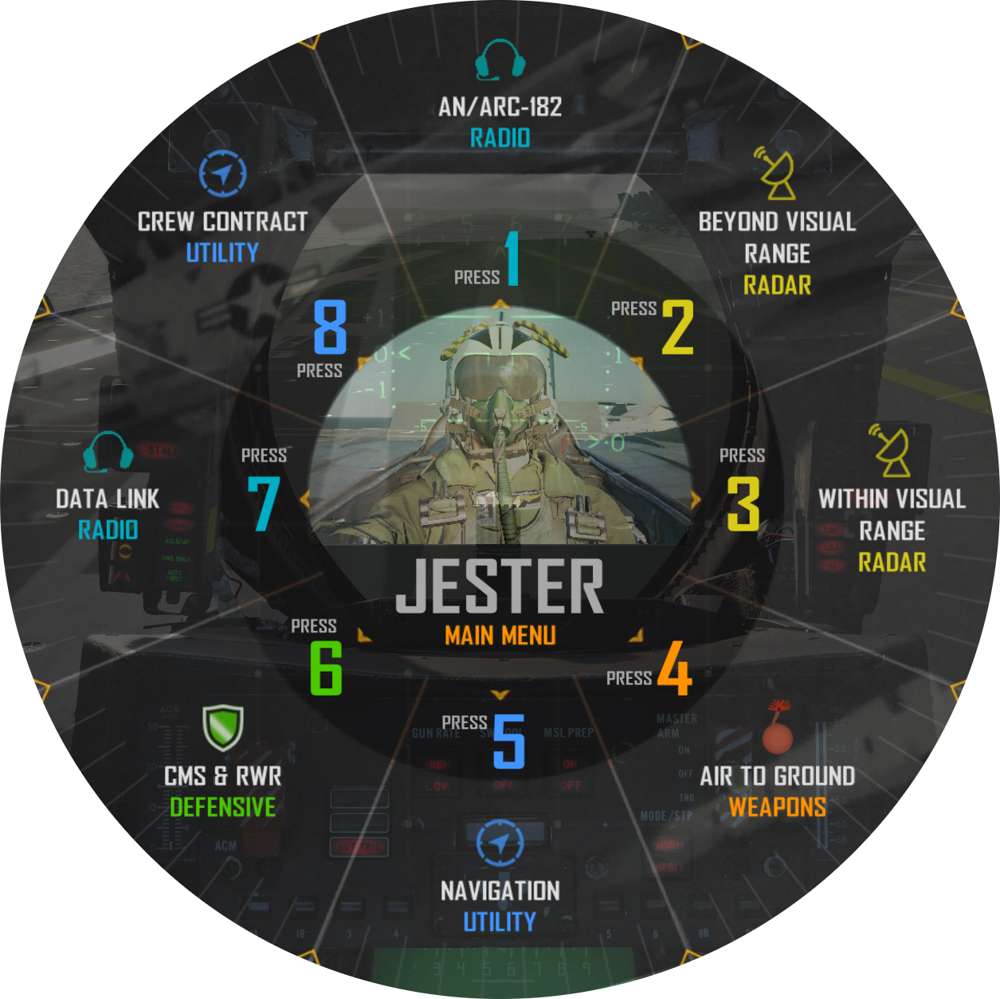
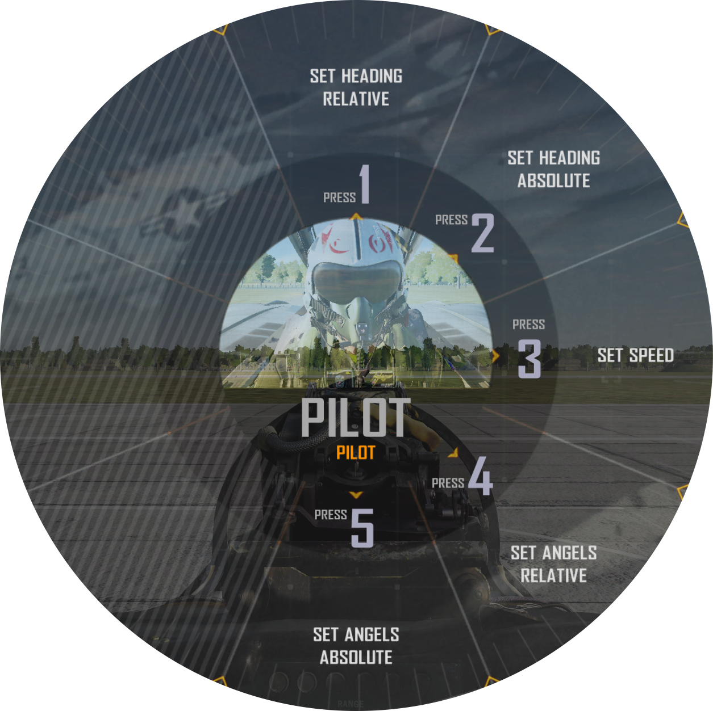
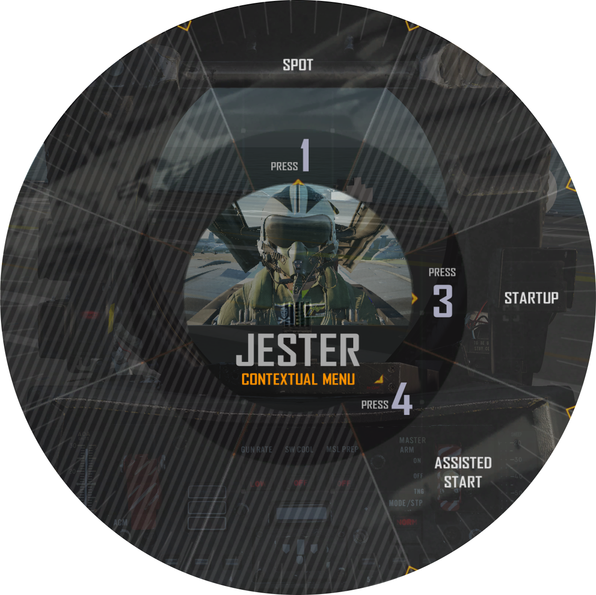
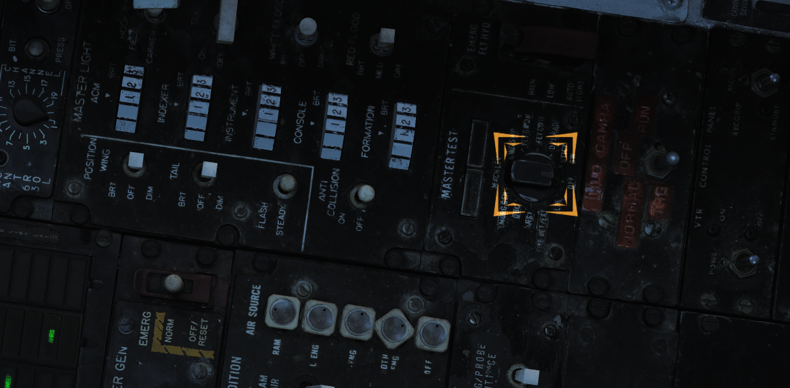

DCS 特定功能¶
Jester¶
Jester AI 的目标是为 Heatblur DCS F-14B 打造一个 AI 雷达拦截官（即 RIO），便于玩家能够在单人（单人单架飞机）的环境下享受双人协作驾驶的快感。
Jester 被完全集成进了后驾驶舱，他需要控制将近所有的后舱系统并且聚焦于前座飞行员在其座位上所无法完成的操作，同样，他还被建模以考虑到一名真正的 RIO 的局限性，这意味着，除了这些以外，他目前的头部位置，目视所及之范围以及他的手在作什么，都被完全建模以做考量。当在 RIO 座位上控制这些系统时他将执行所有真人 RIO 所需要执行的操作。
要命令/控制 Jester ，通过一个命令盘菜单即可实现快速操作。该命令盘菜单中的内容会根据当前模式选择和目前的状况进行动态的调整。Jester 的反馈会调用录音库中的语句并通过内话系统传递给玩家，以模拟出与实际 RIO 交流的体验，并且，除了确认指令以外，Jester 还会根据当前的情况向飞行员传达相关信息。
最后，在多人游戏中，加入其他玩家的 RIO 会发现加入时所有的控制（例如：开关的位置等）都处在 Jester 离开前所留下的位置上，同理，若玩家 RIO 离开，Jester也会按照玩家所留下的设置来接手玩家的工作。
功能¶
在默认设置下，Jester 菜单需要按下 A 来调出，选择其中的项目（1到8）则是通过 CTRL + 1 到 8 实现的。这些按键命令可以被修改或是设置到控制器上。您可以在 DCS 按键设置中选择 F-14 飞行员分类并在 Jester 子条目下找到上述按键设定。按花瓣方式设置的菜单子条目使得它们可以被轻松设定在游戏控制器的八向苦力帽上。此外，您可以通过调整驾驶舱视角的方式选择命令盘中的一个选项并通过按住 Jester 菜单按键超过0.5秒来进行选择。这个选项可以在 F-14B 的专用设置中启用或停用。
上图便是 Jester 主菜单。菜单中包含了所有可用的不同子菜单。选择 Jester 菜单的第一个选项通常会进入到下一个子菜单中，子菜单的内容会由飞机目前的模式和状态所决定。举例，在空中选择空对空模式会将玩家直接引导至 超视距 - 雷达 菜单，而在空中选择空对地模式则会进入 空对地 - 武器 页面。除此之外，起飞和着陆模式也有只在这些模式启用时才启用的子菜单。
在按下 Jester 菜单按键并进入相关子菜单页面后再一次按下同样的按键后将显示 Jester 主菜单，以选择与自动选择的子菜单所不同的另一个子菜单。
连续按下 Jester 菜单按键后的正常显示序列是这样： 菜单关闭 -> 依据模式和情况决定的子菜单 -> 主菜单 -> 菜单关闭。
通过这些菜单便使得从前座控制后舱的诸多系统成为了可能。不同子菜单的内容可能会根据之前的指令而发生变化，并且某些系统使用命令盘中的选项作为输入键盘以在对应系统中设置频率或是其他数字。
举例，我们可以通过用这样的方式和 Jester 沟通让他向导航系统中输入一个航路点坐标。但是这需要大量连续而繁琐的按键。在这种情况下，作为捷径，我们可以让 Jester 从 F10 地图中设置的地图标记中输入一个导航点。在这种情况下，为了帮助选择标记，菜单将显示自创建标记时经过的时间以及标记点的名称。
In the case of a system needing to select a specific symbol, like choosing a target on the TID to lock in STT, the menu will allow the pilot to tell Jester to either lock the closest target, closest hostile target and so on. In addition it is also possible to specify a specific symbol/track to look using an azimuth/range system.
最后， Jester 同样能够帮你读出启动检查单来帮助飞行员在冷仓启动过程中进一步熟悉 F-14 的启动过程。
Iceman¶
除了 Jester ，或者说，作为 Jester AI 的一部分， Heatblur DCS F-14B 同样有 Iceman ，一个基础的的自动驾驶仪/AI ，这适用于单人模式，当玩家在前后座之间跳转以同时控制两个驾驶舱内的系统时，这个基本的自动驾驶仪就会激活，并使用与控制 Jester 相同的控制方法。
基本原理是，当玩家切换到后舱 RIO 的座位时， Iceman 将接管控制来保持当前的航向和高度。菜单——现在是 Iceman 菜单了——允许玩家设置航向、高度和速度。航向和高度可以相对目标设定，也可以设定为不依照任何外部参考的绝对值。
协助启动¶
对于冷启动， Jester 可以像一名真正的 RIO 一样执行他的检查单，也可以帮助飞行员进行协助启动。在协助启动中， Jester 会向你朗读飞行员的检查单。
如需执行正常的，无协助的启动，选择启动， Jester 将执行他的检查单。他有时候会询问飞行员是否完成了某些检查或是要求进行具体的测试，这可以通过 Jester 菜单中的选项来回复。举例，他会首先要求进行通讯检查，这便需要用到 Jester 菜单了。请注意，在完成引擎启动和 EMERG GEN Master 测试之后他将会询问使用何种 INS 校准，这同样也是通过 Jester 菜单来选择的。
若需执行协助启动，在 Jester 菜单上选择协助启动。在启动过程中 Jester 将会像飞行员读出检查单并提醒飞行员有哪些相关的指示和开关。当检查/步骤完成后使用 Jester 菜单来通知 Jester 操作已完成。
DCS F-14 专用设置¶
Heatblur DCS F-14 将拥有仅影响 F-14 的设置选项，这些选项位于 DCS 主菜单下的 选项 -> 专用设置 -> F-14B 页面。
可用的选项包括：
| 控制 | 功能 |
|---|---|
| 无线电菜单和按键通话行为 | 设定无线电按下送话按钮影响 DCS 无线电菜单的方式。若使用 PTT 按钮进行 SRS 通讯该设置将非常有用。 |
| Jester AI 选项 | |
| 使用头部移动进行 Jester 菜单选择 | 允许用头部移动选择 Jester 菜单中的条目（需要 VR 或 Track-IR） |
| 无聊的 Jester | 禁用 Jester 的润色和笑话。 |
| 视距内空战以 P-STT 锁定而不是 PD-STT | 进入格斗射程后 Jester 会自动将雷达切换至 P-STT 模式。 |
| Jester 菜单摄像头 | 在 Jester 菜单上启用或禁用 Jester 镜头。 |
Heatblur DCS F-14 的任务编辑器功能¶
F-14 在 DCS 的任务编辑器中有特殊的选项和航路点设置可用。
当设置含有 F-14 的飞机群组时，可在飞机页面下的附加属性页面下设置飞机的特殊选项。
除了航路点1到3和基地之外，航路点还使用导航目标点页面进行设置。该页面在设置包含 F-14 的群组时仍然可用。
Heatblur DCS F-14 任务编辑器专用选项¶
| 选项 | 对应设置选项 |
|---|---|
| M-61 机炮连发模式 | 设定 M-61 最大连射长度，设为手动将使机炮持续开火至弹药耗尽。 |
| AN/ALE-39 装填 | 设置 AN/ALE-39 对抗发射器的装填方案。 |
| 以箔条填充 LAU-138 | 设定在飞机重生时是否用箔条填满 LAU-138发射器。 |
| INS 参考校准已存储 | 设定在飞机重生时是否在 INS 系统中预先存有参考校准信息。 |
| 塔康频道预选（0 = 自动） | 设定飞机重生时预先选择好的塔康频道。0将设置为重生时最近的基站。 |
| 塔康频段 | 设定飞机重生时预先选择好的塔康频段。 X 或 Y 。 |
| ILS 面板预选 | 设定飞机重生时预先选择好的ICLS频道。 |
| KY-28 加密密钥 | 设定飞机重生时 KY-28 所加载的加密密钥。 |
| 激光编码 第一位至第四位 | 设定飞机重生时已经挂载好的激光制导武器的预设激光编码。 |
任务编辑器 F-14 航路点选项¶
由于 F-14 的导航系统只有三个编号的航路点，因此大多是其他的航路点则使用导航目标点来设置。
任务编辑器中航路点1到3是在各自所对应的航路点设置中所设置的。
Home Base则设置为着陆航路点。
而其余的则是通过创建并命名导航目标点来设置，如下表所示。
| 航路点 | 设定的航路点名称 |
|---|---|
| 定位点 | FP |
| 起始点 | IP |
| 地面/水面目标 | ST |
| 防御目标点 | DP |
| 敌占区 | HA |
| 数据链路点 1 到 3 | DLWP1, DLWP2 及 DLWP3 |
| 数据链地面/水面目标 | DLST |
| 数据链定位点 | DLFP |